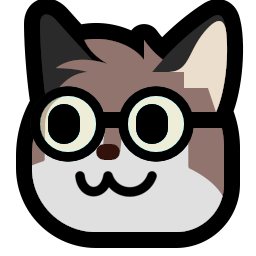
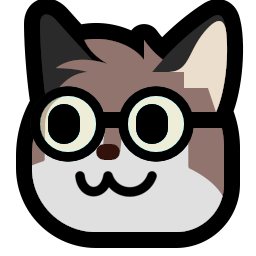

Hello, I'm nanobot567 (he/him). I'm just a weirdo trying to make cool stuff :3
In my free time I mainly code and produce music, but I've also dabbled in drawing, bookwriting, and creating conlangs.
Recently I've been creating apps for the Playdate console! I made a nifty little music making app called CS-16, a music player called musik, and currently I'm working on my first "real" game (where I'm actually serious about making it good and polished haha) called Overflow.
If you'd like to link to my website for some reason, here are a few you could use!
(My pixel art skills are kind of garbage so sorry if these look bad LOL)
Here's a template for embedding one of them directly, although I'd recommend replacing the URL with a local path:
<a href="https://nanobot567.github.io/"><img src="https://nanobot567.github.io/media/images/88x31/nanobot-orange-filled-mono.gif" /></a>
Neofox is by Volpeon, and Neowolf is by Ente!
this website proudly has low amounts of javascript! javascript is only used for text foreground / background color swapping and text visibility toggle buttons.
it also achieved a B rating on websitecarbon.com!! you can check out the results here.
 
